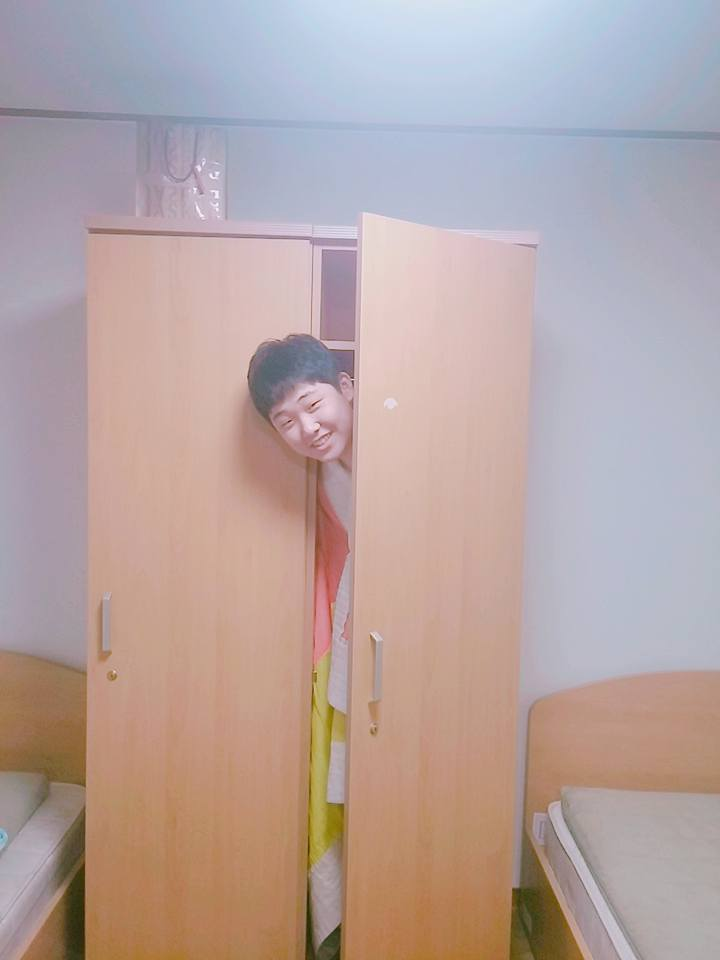

안녕하십니까,
성윤위키에 방문해주셔서 감사합니다, 그리고 환영합니다!
본 사이트 성윤위키는 나무위키의 형태와 방식을 본따 자체적으로 만든 사이트입니다.
본 사이트에 작성된 모든 내용은 사이트 제작자인 저, 이성윤이 직접 작성한 내용입니다.
이 사이트의 경우 HTML 공부 과정에서 실습 목적으로 만들어 본 사이트입니다.
아직 배우는 단계라 사이트가 다른 사이트들처럼 높은 수준은 아닌 점 양해 부탁드리고 재미로만 구경해주시면 감사하겠습니다.
Contact : Instagram @lfabien_